The difference between a concept and a formative force of history becomes a question of perspective—which is why, try as it might, historiography can never disentangle itself from philosophy, especially when it is a question of such fundamentally quizzical issues as preemption and ontopower. Alone, historiography cannot approach them—much less the crucial question for the future of what a counter-ontopower might be. (Brian Massumi, ix)
Parametric Apprehension
10000km
Exosphere
600km
Thermosphere
85km
Mesosphere
50km
Stratosphere
14.5km
Troposphere
0km
Litosphere
-1.8km
It is said that Turner's sunset paintings depict particularly well the orange tincture acquried by the sky due to the higher sulphur amounts after the Tambora eruption.
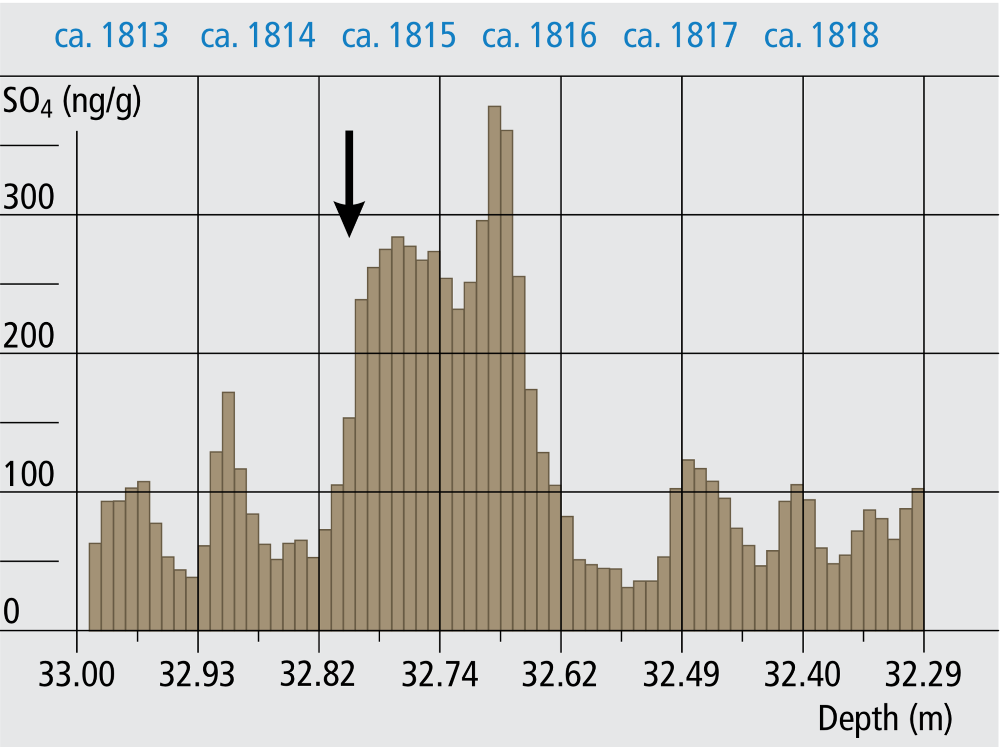
Sulphur concentration in segments of an ice core from Greenland showing accumulation of sulphur fallout in the year after the eruption of Mount Tambora. (Bigler M et al. 2002)
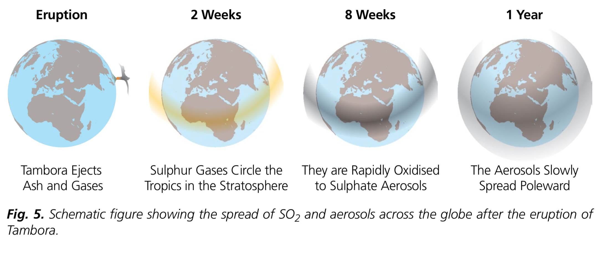
Model of the dispersion of 60 to 80 megatons of SO2 produced by Mt Tambora in 1886. Reconstruction of sulphur dispersal based on ice cores, paintings from the period, and current knowledge of stratospheric wind patterns. Graphic published by Oeschger Center for Climate Change Research.
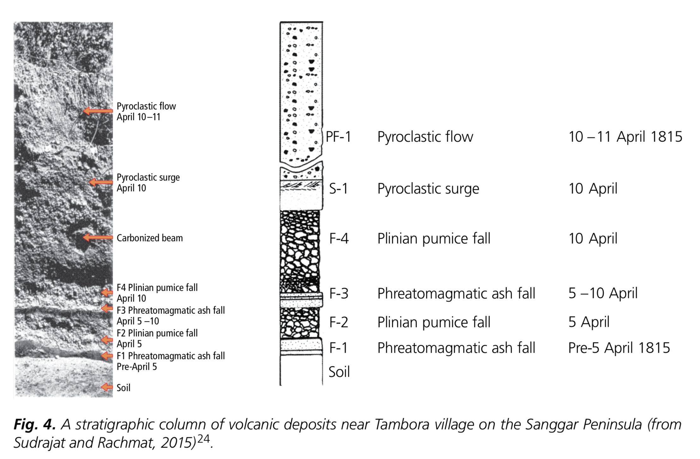
I had a dream, which was not all a dream.
The bright sun was extinguish'd, and the stars
Did wander darkling in the eternal space,
Rayless, and pathless, and the icy earth
Swung blind and blackening in the moonless air;
Morn came and went—and came, and brought no day,
And men forgot their passions in the dread
Of this their desolation; and all hearts
Were chill'd into a selfish prayer for light:
And they did live by watchfires—and the thrones,
The palaces of crowned kings—the huts,
The habitations of all things which dwell,
Were burnt for beacons; cities were consum'd,
And men were gather'd round their blazing homes
To look once more into each other's face;
Happy were those who dwelt within the eye
Of the volcanos, and their mountain-torch:
A fearful hope was all the world contain'd;
Forests were set on fire—but hour by hour
They fell and faded—and the crackling trunks
Extinguish'd with a crash—and all was black.
The brows of men by the despairing light
Wore an unearthly aspect, as by fits
The flashes fell upon them; some lay down
And hid their eyes and wept; and some did rest
Their chins upon their clenched hands, and smil'd;
And others hurried to and fro, and fed
Their funeral piles with fuel, and look'd up
With mad disquietude on the dull sky,
The pall of a past world; and then again
With curses cast them down upon the dust,
And gnash'd their teeth and howl'd: the wild birds shriek'd
And, terrified, did flutter on the ground,
And flap their useless wings; the wildest brutes
Came tame and tremulous; and vipers crawl'd
And twin'd themselves among the multitude,
Hissing, but stingless—they were slain for food.
And War, which for a moment was no more,
Did glut himself again: a meal was bought
With blood, and each sate sullenly apart
Gorging himself in gloom: no love was left;
All earth was but one thought—and that was death
Immediate and inglorious; and the pang
Of famine fed upon all entrails—men
Died, and their bones were tombless as their flesh;
The meagre by the meagre were devour'd,
Even dogs assail'd their masters, all save one,
And he was faithful to a corse, and kept
The birds and beasts and famish'd men at bay,
Till hunger clung them, or the dropping dead
Lur'd their lank jaws; himself sought out no food,
But with a piteous and perpetual moan,
And a quick desolate cry, licking the hand
Which answer'd not with a caress—he died.
The crowd was famish'd by degrees; but two
Of an enormous city did survive,
And they were enemies: they met beside
The dying embers of an altar-place
Where had been heap'd a mass of holy things
For an unholy usage; they rak'd up,
And shivering scrap'd with their cold skeleton hands
The feeble ashes, and their feeble breath
Blew for a little life, and made a flame
Which was a mockery; then they lifted up
Their eyes as it grew lighter, and beheld
Each other's aspects—saw, and shriek'd, and died—
Even of their mutual hideousness they died,
Unknowing who he was upon whose brow
Famine had written Fiend. The world was void,
The populous and the powerful was a lump,
Seasonless, herbless, treeless, manless, lifeless—
A lump of death—a chaos of hard clay.
The rivers, lakes and ocean all stood still,
And nothing stirr'd within their silent depths;
Ships sailorless lay rotting on the sea,
And their masts fell down piecemeal: as they dropp'd
They slept on the abyss without a surge—
The waves were dead; the tides were in their grave,
The moon, their mistress, had expir'd before;
The winds were wither'd in the stagnant air,
And the clouds perish'd; Darkness had no need
Of aid from them—She was the Universe.
Poem written on the wake of the Tambora eruption, during the 'year without summer' which was marked by lower temperatures and lack of light all throughout the world. (Lord Byron).
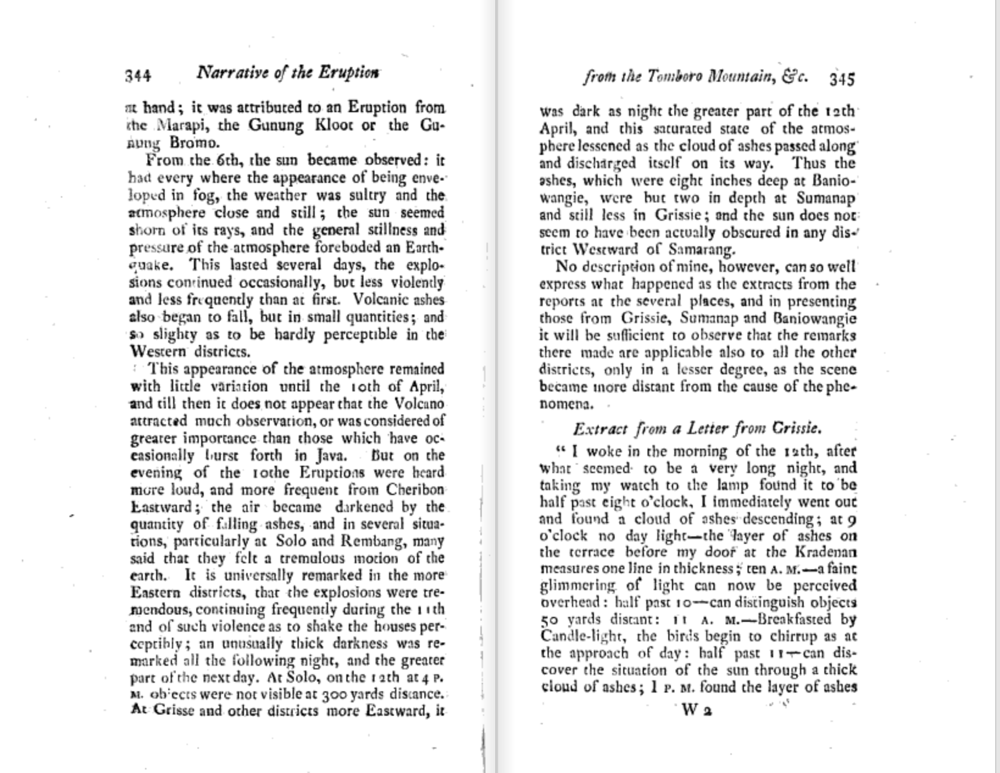
The Raffles Report: Narrative of the effects of the eruption from the Tomboro mountain, in the island of Sumbawa on the 11th and 12th of April 1815
DOD film, Operation Teapot: Military Effects Studies. Operation Teapot consisted of 14 nuclear tests detonated from February 18 to May 15, 1955.
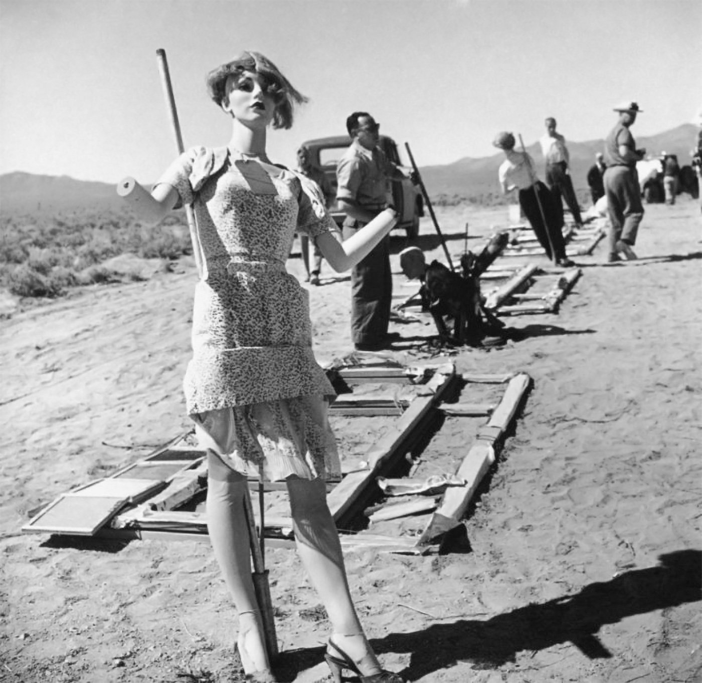
After blast: line of mannequins [sic] at 7,000 feet, part of thermal radiation test, May 5, 1955. (Nebraska Studies Archive)
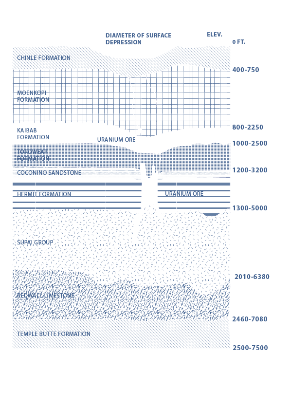
Uranium Deposit in Breccia Pipes, AZ
Imaged produced based on data available in: Uranium Resource Availibility, Otton, 2010.
Using data from the Mike and Bravo detonations, the researchers demonstrated that fallout entered the upper stratosphere and circled the earth, distributing fallout across the northern hemisphere. In the process of studying these nuclear effects, they also mapped stratospheric wind patterns. Their work was part of a wide range of new research that used the effects of atmospheric nuclear testing to study ecological transport and circulation (see also Kroening 1965; Hare 1962; Odum and Odum 1955)...Satellite surveillance systems increased exponentially in resolution and data collecting power during the Cold War, ultimately measuring weather, temperature, and ozone levels as well as identifying nuclear silos, military bases, and troop movements (see, for example, Mason, Massey, and Bedford 1968). Finally, the integration of these data sets into a comprehensive portrait of global climate was enabled by the long-term military investment in supercomputing (Edwards 1996 and 2000). The history of supercomputing in the United States is deeply intertwined with the history of U.S. nuclear weapons programs. Indeed, the complexity of modeling nuclear weapons explosions may only be exceeded by the complexity of modeling global environmental change. In sum, weather prediction, the study of ice caps, atmospheric and space sciences, satellite cartography, and supercomputing all derive their initial funding and substantial support through the twentieth century from the security logics of the nuclear state and its commitment to building the bomb—thereby establishing the early data sets and infrastructures for climate science. (Joseph Masco)
The Skyline Conference was hosted in 1959 in Virginia and discussed potential methods for weather modification.
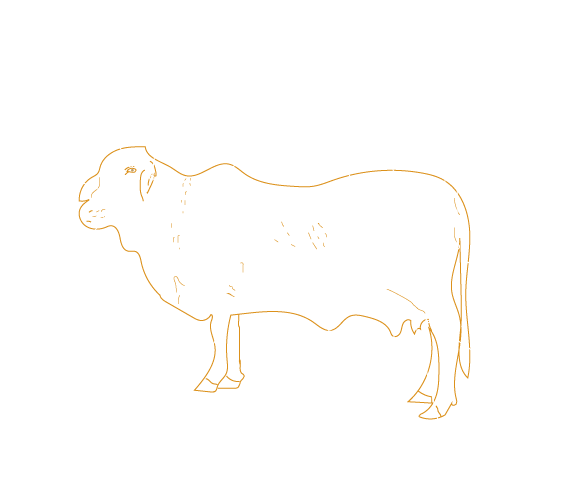
Summary diagram of reported cattle mutilations in New Mexico between 1975 and 1980, in the wake of numerous nuclear experiments in the region. At least 15 out of 84 reported mutilations occurred in Native American Reservation Land including the Jicarilla Apache Reservation and the Santa Clara Pueblo.The events documented in this diagram are derived from declassified FBI files including press, official correspondence, and police reports."
The gap between accuracy and precision in predicting the behaviour of nuclear reactions, however, falls short of explaining even more radical forms of error that lie at the root of the many injuries to human and non-human life provoked by scientific experimentation. Beyond the potential for and variability of error that could be statistically tracked and accounted for, it was error provoked by the unimaginable and the invisibilized that often escaped the risk analysis assessments carried out prior to nuclear detonations. An example from Shannon Cram’s recent ethnographic research at the Hanford Nuclear Plant illustrates this. All projects at Hanford, she explains, are approved by the Department of Energy on the condition that risk and environmental assessments show that “the risk of hazard to workers and the surrounding community” is “one million to one” (Escaping 248). What a requirement like this ignores is that such calculations only measure those risks (to those people or beings) that are within the realm of the ‘known,’ leaving out all instances where matter and energy behave outside existing scientific consensus. In her analysis, Cram argues that the S-102 accident “represented a moment when radioactive waste acted in a way that procedure-creators did not anticipate — the waste’s actions can be said to have exceeded the possible. The material in tank S-102 actually escaped through a dilution hose...the waste changed physical form” (249). The reason why the accident happened was the very same reason that made it impossible for it to figure in risk calculations: prior to the event itself, and in the words of one of the interviewed workers, it was “decided that waste going up the dilution hose was an incredible fact. (Carol Iglesias, Uncertain Injuries).
Because in order to limit differences some difference must be excluded or repressed. This is more than a matter of the language of modulation, or markets, or mathematical models that claim to represent risk. The production of risk is also the material production of exclusion, or if you like, of the relative surplus population, again with an emphasis on relative. We would have to turn in more detail to subaltern studies here and especially to the work of Gayatri Spivak and Dipesh Chakrabarty if we were to pursue the conditions of production that make the concept of probability in difference possible (and by extension the science of financial economics). In subaltern studies epistemological violence and material violence undo the distinction of words and things that the positive science of financial economics, and much of accounting, takes for granted. (Stefano Harney, 16)
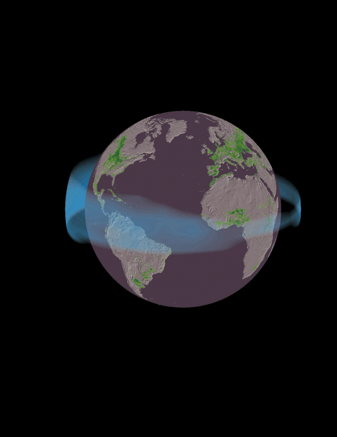
Visualization by Jon Proctor and Solomon Hsiang of the dispersion of 20 million tonnes of SO2 after the eruption of Mt Pinatubo from June 1991 to September 1993. (Each frame is a month).
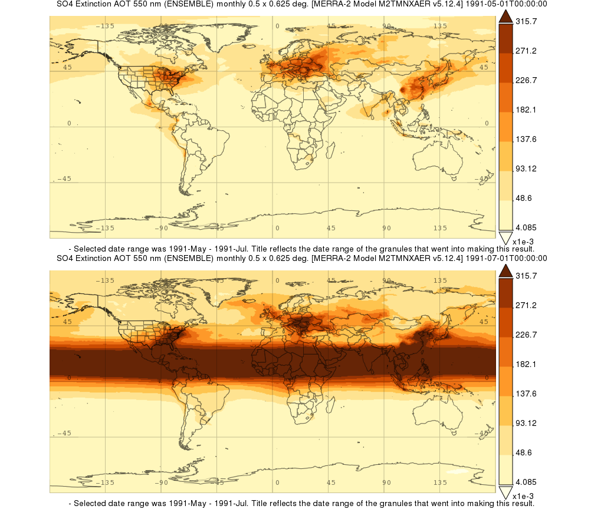
Visualization of SO2 cloud dispersion, one month before and one after the Pinatubo volcanic explosion produced from Lidar data. Red tones indicate higher concentration of SO4 in the stratosphere. Image produced by Carol Iglesias with the Giovanni online data system.
A number of satellites were crucial for the measurement of aerosol depth in the aftermath of the Pinatubo eruption. Among these, NOAA-11 had been launched in 1988 and orbited at around 857km height.
The 03b Network consists of twelve satellites that provide satellite internet connection to 'emerging markets.' The first four satellites of the network were launched in 2013, and the final four in April 2019.
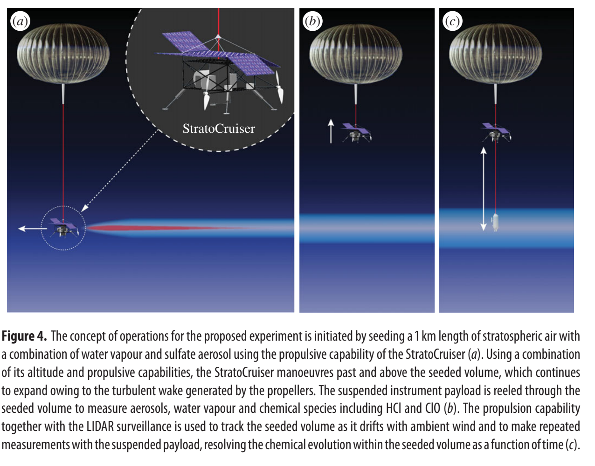
SCoPEx was first introduced to the public in a paper from 2014, in which John
Dykema, David Keith, and other scientists affiliated with Harvard University&s Solar
Geoengineering Program made a case for an “outdoor experiment to test the risks and
efficacy of SRM (Dykema et al. 17)”.
Screengrab from Instagram post on April 10th 2019, from a recent Raven Aerostar operation.Three balloons were flown over New Mexico from the Raton Municipal Airport. As two of the balloons went over Santa Fe, they were recorded and interpreted as a UFO sighting.
"Aerostar is capitalizing on their market-leading technology and customers are responding with positive feedback regarding the division’s service and execution. The division is investing heavily in new product innovations and advancing its flight operation capabilities, and the Company is very optimistic about the division's future business prospects. These investments have been purposeful and are indicative of the future growth potential within its core stratospheric balloon and radar product platforms."(Citation from Form 10-Q)
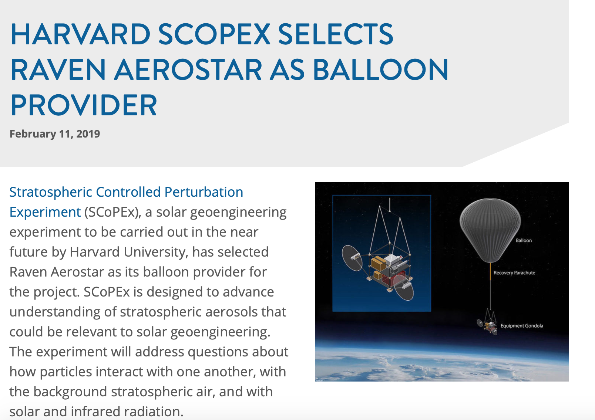
"Raven Aerostar selected to develop balloons for Harvard Scopex Experiment"
David Keith describes Harvard's vision of geoengineering in The Economist Film: The Climate-Change Experiment, Published October 2017.
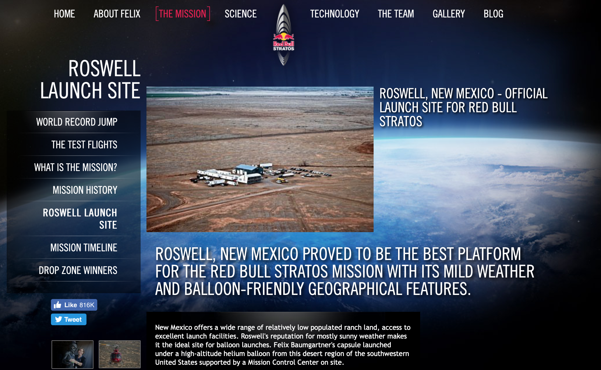
Probable balloon launch site for ScoPeX Solar Geoengineering Experiment, current New Mexico launching site for Project Partner Raven Aerostar.
Aerosols propagated in the stratosphere scatter incoming sunlight. In response to decreasing light, vegetation exchanges fruit growth for leave growth to gain light exposure. Image found in Jonathan Proctor's paper "Estimating the impact of geoengineering on crop productivity using volcanic eruptions as natural experiments."
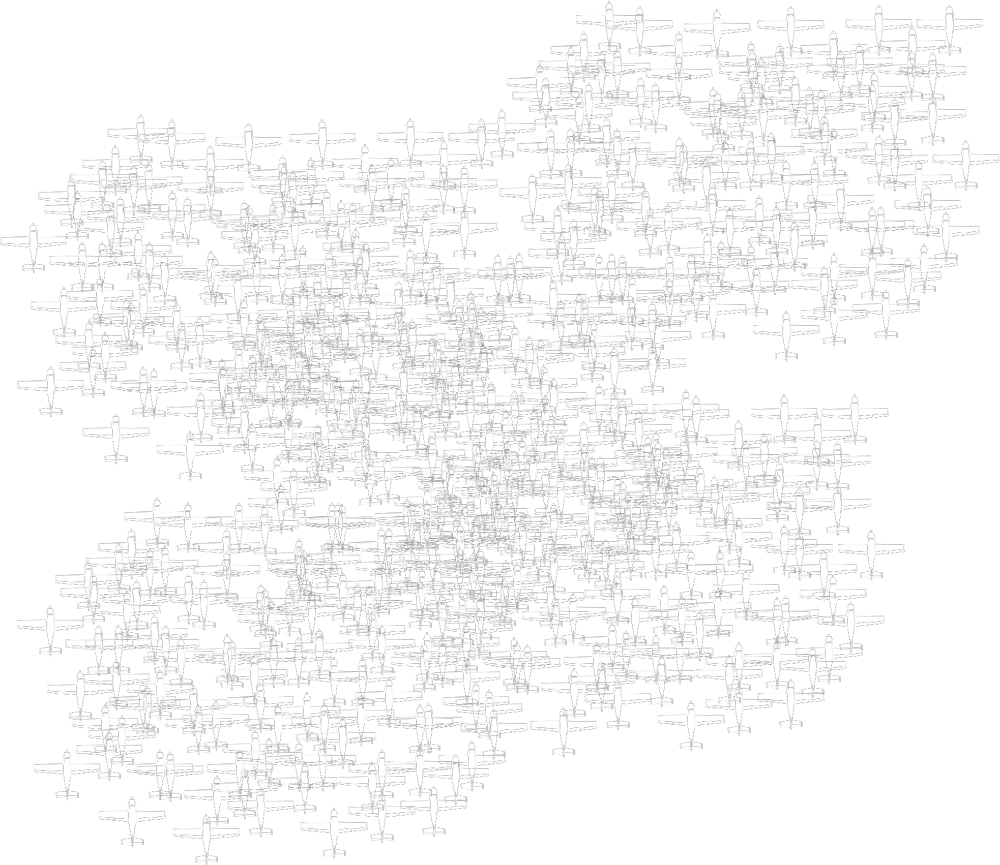
The number of flights necessary to decrease global temperature by a third of a degree in 2035 according to scientific literature published by Harvard associates is 480783. Multiplying the number of planes in this drawing by 4699 gives you an approximate number of flights.
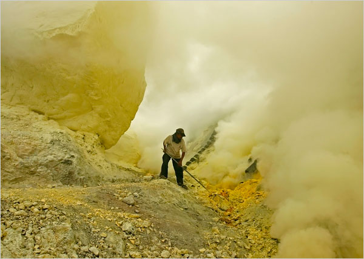
In 2035a, about a million tonnes of sulfur has been mined already for the purposes of geoengineering. According to calculations made in 2018, the tonne of molten S remains at $80 thanks to global supply chains, so despite the large amounts of sulfur mining necessary, only 3% of the budget is spent on this.
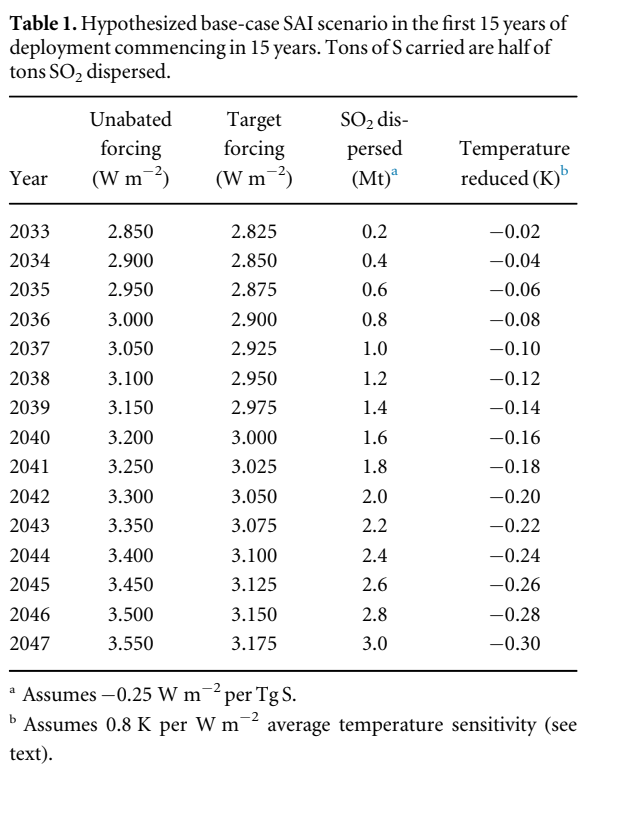
thick glow, splintered crowd of light
bluethick the skies over an empty house
wallless, lessened, shallowed its built through someone’s death,
has my death been noted? yesterday dozens of pyres melted, beneath and over.
overtly unhidden
you repaired the dress linens to cover
a kind, who sightless after a cloud passed,
deftly impaired in common sight,
as a kind, also, barely breathing -- choked
their letters currenting down a piece,
in procession by a road littering,
hollowed specks that you could pop, carpeted every direction, since we left the heating on.
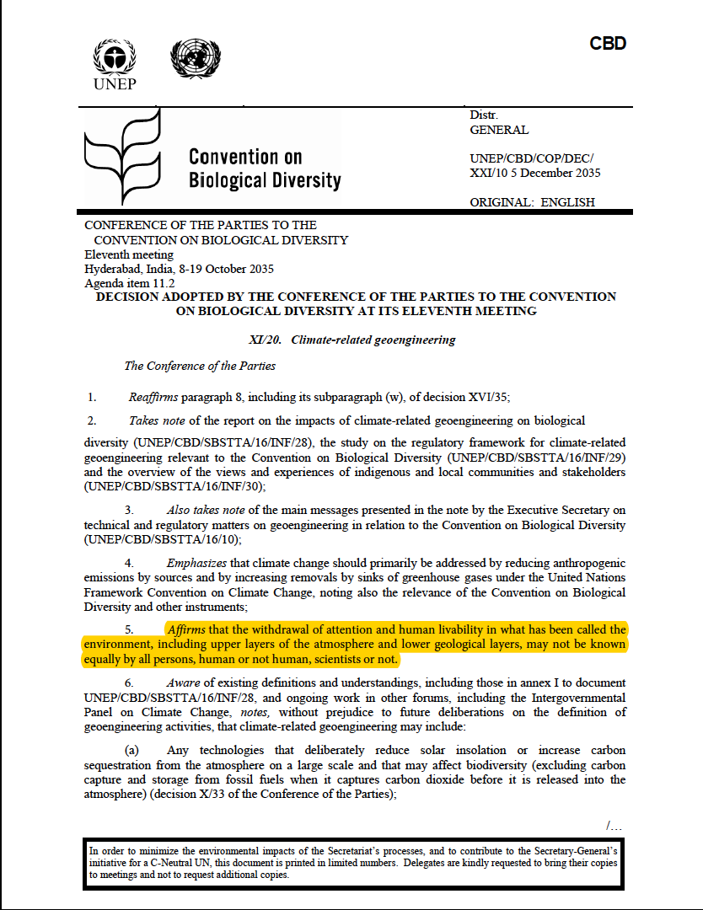
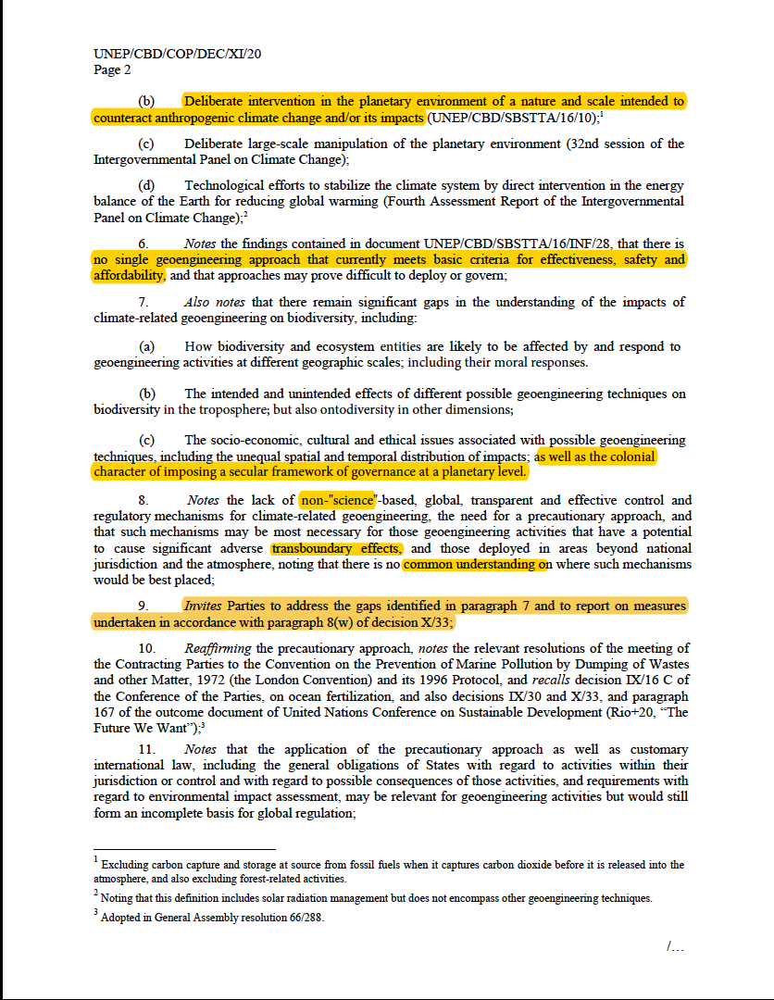
In 2035b, the Convention on Biological Diversity is tarified once again, stating the necessity to broaden forms of research outside of scientific paradigms with regards to the definition of geoengineering. This world, here imagined, is a world that has opted for a multiontological approach to geoengineering. It remains to see whether it can challenge the very paradigm of recognition that ontological difference is subsumed under today.